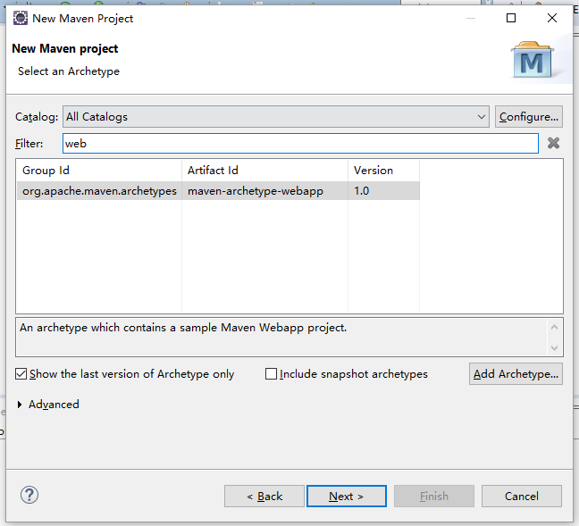
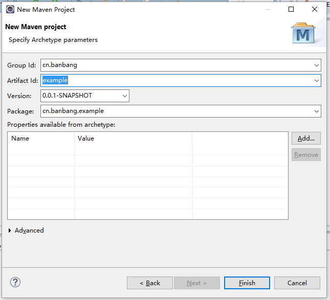

创建Maven项目
简介
本次主要引导开发者使用Maven在项目中配置ApiAnnotations框架。所以，在Eclipse平台上面使用ApiAnnotations框架时，需确认Eclipse已安装Maven插件。 下载maven插件
创建项目
开始创建一个Maven Project


POM文件配置
pom.xml中配置方式很简单。
添加以下dependencies
以下为ApiAnnotations框架的核心代码库
<dependency>
<groupId>cn.banbang</groupId>
<artifactId>ApiAnnotations-core</artifactId>
<version>1.0</version>
<scope>system</scope>
<systemPath>${project.basedir}/lib/ApiAnnotations-core-0.0.2.jar</systemPath>
</dependency>
<dependency>
<groupId>cn.banbang</groupId>
<artifactId>ApiAnnotations-web</artifactId>
<version>1.0</version>
<scope>system</scope>
<systemPath>${project.basedir}/lib/ApiAnnotations-web-0.0.2.jar</systemPath>
</dependency>
添加spring和hibernate相关jar包
<dependency>
<groupId>javax.servlet</groupId>
<artifactId>javax.servlet-api</artifactId>
<version>3.1.0</version>
</dependency>
<dependency>
<groupId>com.alibaba</groupId>
<artifactId>fastjson</artifactId>
<version>1.2.7</version>
</dependency>
<dependency>
<groupId>commons-dbcp</groupId>
<artifactId>commons-dbcp</artifactId>
<version>1.4</version>
</dependency>
<dependency>
<groupId>commons-pool</groupId>
<artifactId>commons-pool</artifactId>
<version>1.5.4</version>
</dependency>
<dependency>
<groupId>org.springframework</groupId>
<artifactId>spring-context</artifactId>
<version>4.1.2.RELEASE</version>
</dependency>
<dependency>
<groupId>org.springframework</groupId>
<artifactId>spring-webmvc</artifactId>
<version>4.1.2.RELEASE</version>
</dependency>
<dependency>
<groupId>org.springframework</groupId>
<artifactId>spring-orm</artifactId>
<version>4.1.2.RELEASE</version>
</dependency>
<dependency>
<groupId>org.springframework</groupId>
<artifactId>spring-jdbc</artifactId>
<version>4.1.2.RELEASE</version>
</dependency>
<dependency>
<groupId>org.springframework</groupId>
<artifactId>spring-test</artifactId>
<version>4.1.2.RELEASE</version>
</dependency>
<dependency>
<groupId>org.hibernate</groupId>
<artifactId>hibernate-core</artifactId>
<version>4.3.8.Final</version>
</dependency>
<dependency>
<groupId>org.hibernate</groupId>
<artifactId>hibernate-entitymanager</artifactId>
<version>4.3.8.Final</version>
</dependency>
<dependency>
<groupId>mysql</groupId>
<artifactId>mysql-connector-java</artifactId>
<version>5.1.24</version>
</dependency>
<dependency>
<groupId>org.aspectj</groupId>
<artifactId>aspectjrt</artifactId>
<version>1.7.4</version>
</dependency>
<dependency>
<groupId>org.aspectj</groupId>
<artifactId>aspectjweaver</artifactId>
<version>1.7.4</version>
</dependency>
<dependency>
<groupId>org.apache.velocity</groupId>
<artifactId>velocity</artifactId>
<version>1.7</version>
</dependency>
<dependency>
<groupId>commons-codec</groupId>
<artifactId>commons-codec</artifactId>
<version>1.10</version>
</dependency>
<dependency>
<groupId>log4j</groupId>
<artifactId>log4j</artifactId>
<version>1.2.17</version>
</dependency>
确保你的项目编译至少为 Java 1.7
<build>
<finalName>ROOT</finalName>
<plugins>
<plugin>
<groupId>org.apache.maven.plugins</groupId>
<artifactId>maven-compiler-plugin</artifactId>
<version>3.0</version>
<configuration>
<source>1.7</source>
<target>1.7</target>
</configuration>
</plugin>
</plugins>
</build>
配置项目环境
web.xml配置
web.xml的配置，基本上默认就可以了
<?xml version="1.0" encoding="UTF-8"?>
<web-app
xmlns:xsi="http://www.w3.org/2001/XMLSchema-instance"
xmlns="http://java.sun.com/xml/ns/javaee"
xsi:schemaLocation="http://java.sun.com/xml/ns/javaee" id="WebApp_ID" version="3.0">
<welcome-file-list>
<welcome-file>index.jsp</welcome-file>
</welcome-file-list>
</web-app>
解决web.xml零配置
DefaultConfigration.java配置文件默认在cn/banbang/core文件夹中
package cn.banbang.core;
import java.util.EnumSet;
import javax.servlet.DispatcherType;
import javax.servlet.FilterRegistration;
import javax.servlet.ServletContext;
import javax.servlet.ServletException;
import org.springframework.orm.hibernate4.support.OpenSessionInViewFilter;
import org.springframework.web.WebApplicationInitializer;
import org.springframework.web.context.ContextLoaderListener;
import org.springframework.web.context.support.AnnotationConfigWebApplicationContext;
/**
* web配置，等价于配置web.xml
* http://hanqunfeng.iteye.com/blog/2114967 SpringMVC4零配置--web.xml
*/
public class DefaultConfigration implements WebApplicationInitializer {
private AnnotationConfigWebApplicationContext applicationContext;
private ServletContext servletContext;
public void onStartup(ServletContext context) throws ServletException {
this.servletContext = context;
applicationContext = new AnnotationConfigWebApplicationContext();
applicationContext.register(SpringConfig.class);
// 给web添加spring监听器 等价于
servletContext.addListener(new ContextLoaderListener(applicationContext));
// 给web添加 OpenSessionInViewFilter 过滤器 等价于
FilterRegistration.Dynamic filter = servletContext.addFilter("hibernateFilter", OpenSessionInViewFilter.class);
filter.addMappingForUrlPatterns(EnumSet.of(DispatcherType.REQUEST), true, "/*");
}
}
spring框架参数配置文件 > SpringConfig.java
SpringConfig.java配置文件默认在cn/banbang/core文件夹中
package cn.banbang.core;
import java.io.File;
import java.io.IOException;
import org.apache.commons.dbcp.BasicDataSource;
import org.hibernate.SessionFactory;
import org.springframework.context.annotation.Bean;
import org.springframework.context.annotation.ComponentScan;
import org.springframework.context.annotation.Configuration;
import org.springframework.context.annotation.EnableAspectJAutoProxy;
import org.springframework.orm.hibernate4.HibernateTransactionManager;
import org.springframework.orm.hibernate4.LocalSessionFactoryBean;
import org.springframework.scheduling.annotation.EnableAsync;
import org.springframework.scheduling.annotation.EnableScheduling;
import org.springframework.transaction.PlatformTransactionManager;
import org.springframework.transaction.annotation.EnableTransactionManagement;
import cn.banbang.ApiAnnotations.web.handler.ComponentManager;
import cn.banbang.ApiAnnotations.web.handler.Context;
import jodd.props.Props;
/**
* Spring配置，等价于配置Spring application.xml
* http://hanqunfeng.iteye.com/blog/2114975 SpringMVC4零配置--应用上下文配置
*/
@Configuration
@ComponentScan(basePackages = "cn.banbang")
@EnableAspectJAutoProxy
@EnableTransactionManagement
@EnableScheduling
@EnableAsync
public class SpringConfig {
static Props props =new Props();
static{
String path = SpringConfig.class.getResource("/").getPath().substring(1);
try {
path = jodd.util.URLDecoder.decode(path);
props.load(new File(path+"hibernate.properties"), "utf-8");
} catch (IOException e) {
throw new RuntimeException(e);
}
}
@Bean(destroyMethod = "close")
public BasicDataSource dataSource() {
BasicDataSource dataSource = new BasicDataSource();
dataSource.setUrl(props.getBaseValue("bds.url"));
dataSource.setDriverClassName(props.getBaseValue("bds.driver_class"));
dataSource.setUsername(props.getBaseValue("bds.username"));
dataSource.setPassword(props.getBaseValue("bds.password"));
return dataSource;
}
@Bean
public SessionFactory sessionFactory() throws Exception {
LocalSessionFactoryBean bean = new LocalSessionFactoryBean();
bean.setPackagesToScan(props.getBaseValue("hibernate.packages"));
bean.setDataSource(dataSource());
bean.afterPropertiesSet();
return bean.getObject();
}
@Bean
public PlatformTransactionManager platformTransactionManager() throws Exception{
HibernateTransactionManager manager = new HibernateTransactionManager();
manager.setSessionFactory(sessionFactory());
return manager;
}
/**
* 由Spring代理本框架《ApiAnnotations》的核心容器
*/
@Bean
public ComponentManager parameterBuilderFactory() throws Exception{
ComponentManager factory = new ComponentManager();
factory.setAttribute(Context.ATTR_SESSION_FACTORY, sessionFactory());
factory.addFilterHandlerClass( UserAutowireFilter.class,"userAutowire");
factory.addFilterHandlerClass(ValidateCodeFilter.class,"validateCode");
return factory;
}
}
hibernate.properties参数配置
接下来就是hibernate连接数据库的参数配置了，src/main/resources/hibernate.properties
- 数据库驱动
- 数据库连接地址
- 数据库用户名
- 数据库密码
bds.driver_class =com.mysql.jdbc.Driver
bds.url =jdbc:mysql://127.0.0.1:3306/test?useUnicode=true&characterEncoding=UTF-8&autoReconnect=true
bds.username =root
bds.password =root
hibernate.dialect =org.hibernate.dialect.MySQLDialect
hibernate.show_sql=false
hibernate.hbm2ddl.auto=update
hibernate.current_session_context_class=org.springframework.orm.hibernate4.SpringSessionContext
hibernate.packages=cn.banbang
到现在已经创建一个新的maven项目，剩下的就差配置ApiAnnotations核心模块， 配置Eclipse的apt，自动生成代码的部分。
可以开始配置ApiAnnotations框架，配置框架